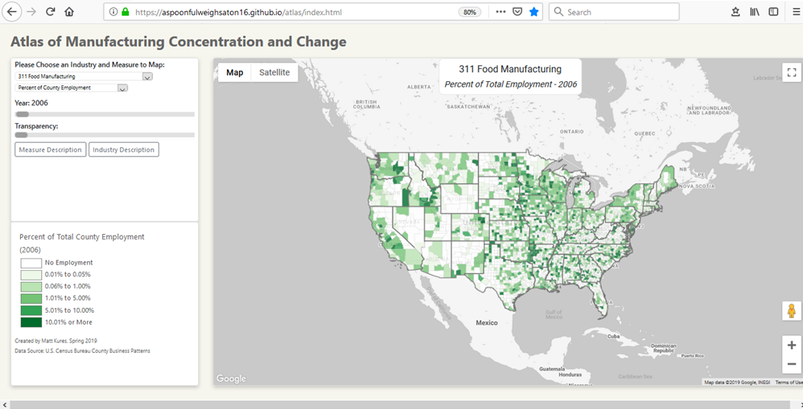
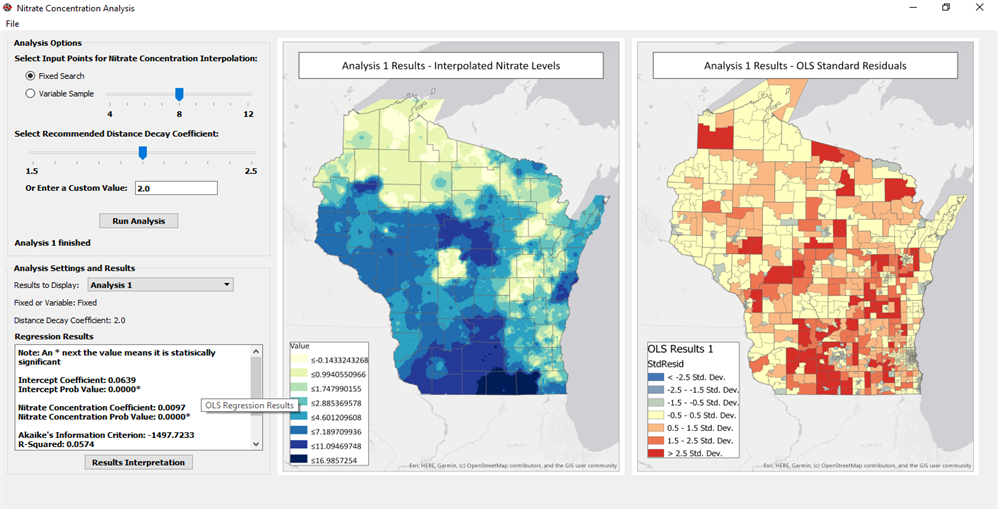
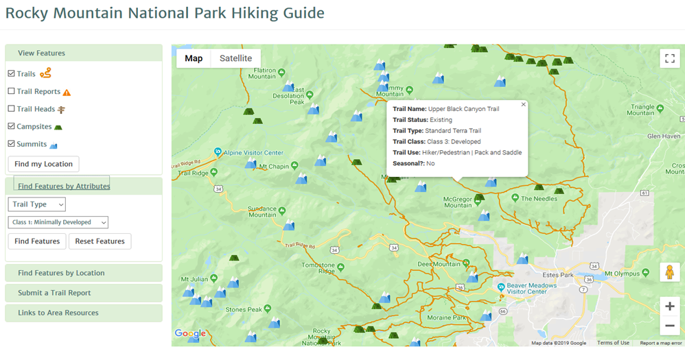

Welcome! I am a Community Development Specialist with the Center for Community and Economic Development at the University of Wisconsin-Madison. The Wisconsin Idea, or the philosophy that the university should influence people’s quality of life beyond the boundaries of the classroom, is central to my work which includes economic development strategy assessment, labor force research, socio-economic impact analysis and industry sector competitiveness. My current research emphases include the role of migration in building entrpreneurial ecosystems, interstate labor mobility, and changes to regional commuting patterns. My background in GIS is a large part of this work which also includes applications of spatial econometrics, spatial demography, and data visualzation. Newer work is featured below, but please explore the rest of my portfolio.
Atlas of Manufacturing Concentration and Change
The Atlas of Manufacturing Concentration and Change is a web-based mapping tool that depicts unsuppressed measures of employment concentration and change for 22 different manufacturing industries across an eleven year period for all counties in the United States. Specific measures of employment change and concentration include total industry employment, an industry’s share of total county employment, industry location quotients, the share of U.S. industry employment within a 100-mile radius of each county and a measure of industrial spatial clustering (e.g. local spatial autocorrelation). Targeted users include economic development professionals, policy makers and academics.
Testing the Relationship Between Groundwater Nitrate Levels and Cancer Rates
This application uses inverse distance weighting to interpolate nitrate levels throughout the State of Wisconsin. Using this interpolation, and the known distribution of cancer rates by census tract, the application then employs Ordinary Least Squares regression to determine whether there is a statistically significant relationship between nitrate levels and cancer rates. The application was built using the ArcPy Python site package and a custom interface designed using the PyQt5 Python GUI library. Click on the image above to view a demonstration of this application.
Rocky Mountain National Parking Hiking Guide
This web-based, mobile-friendly application allows users to explore Rocky Mountain National Park in Colorado. The application places special emphasis on the experiences of hikers and backcountry campers who are able to locate trails that meet specific access criteria, find campsites, and identify mountain summit locations to help them in their climbing activities or general exploration of the park. The application also allows users to submit real-time trail condition reports. The client-side of the application is built using the Google Maps JavaScript API and the server-side relies on a PostGIS-enabled PostgreSQL database. Click on the image above to view a demonstration of this application.